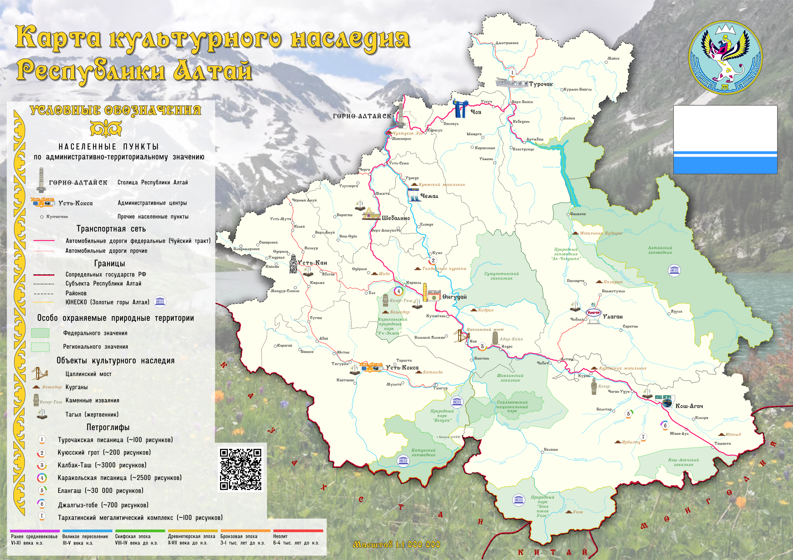

Карта культурного наследия

Карта культурного наследия Республики Алтай
Объекты культурного наследия
- Башадарские курганы — В 1950 году экспедицию под руководством С. И. Руденко раскопала два крупных кургана на скифском могильнике. В ходе исследования было выявлено 57 объектов.
- Петроглифы Калбак-Таша — наскальные рисунки возрастом до 5000 лет.
- Каменное изваяние Кезер — До 1970-х годов «Кезер» находился в урочище Тётё (Тото) в Курайской степи, в составе поминального комплекса. В 1935 году Саяно-Алтайская экспедиция под руководством С. В. Киселёва раскопала оградку, с восточной стороны которой стояло изваяние.
- Культовые места алтайцев — священные горы, перевалы и источники.
- Традиционные поселения — сохранившие архитектуру и уклад жизни коренных народов.
- Этнографическое наследие — традиционные жилища, предметы быта, народные костюмы, музыкальные инструменты, фольклор и обряды алтайского народа. В эту группу можно отнести, обоо, тагылы и т.д. Важную роль в сохранении этнографического наследия играют музеи, такие как Национальный музей Республики Алтай им. А.В. Анохина.